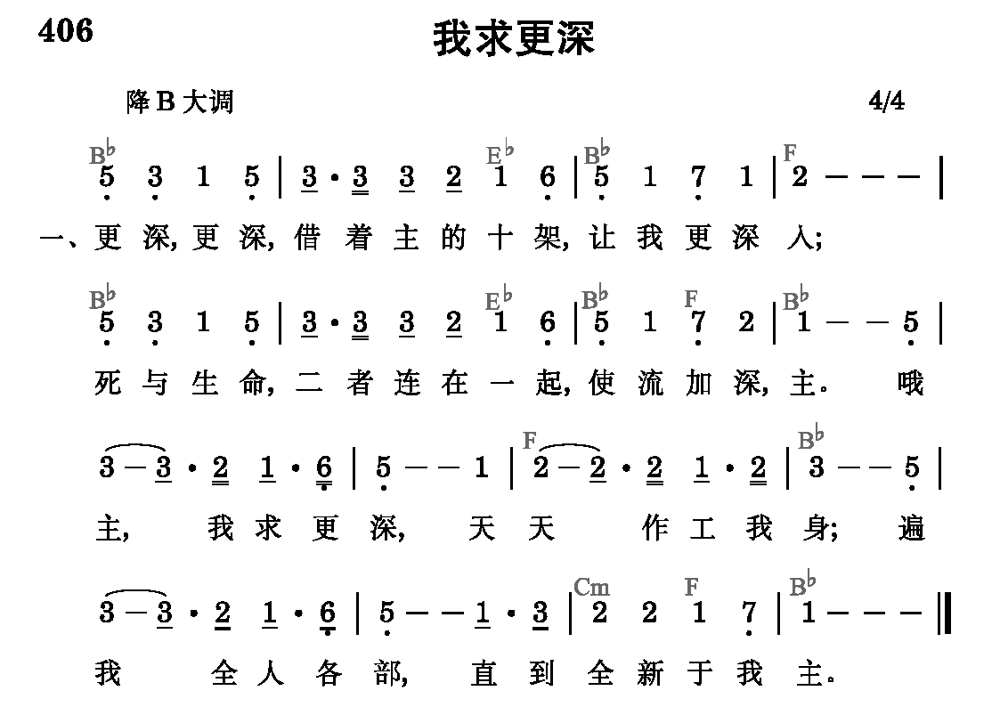

总题：话语的职事与为着神的经纶之神的分赐

2
更高，更高，
在主生命里面；
主，我何低浅！
借你生命我能更高，
更高─更高往上面。
哦主，我求更高，
变化乃我需要─
流中更加丰盛，
惟愿认识你生命。
3
长大，长大，
主在我里长大，
一天过一天。
祂今流入我的一切生活─
这是祂所愿。
哦主，长在我里，
逐日增加不已；
知识不足应付，
必须长大并成熟。
4
生活，生活，
基督是我生活，
祂实际无限！
小事，大事，任何事，
一切事─祂都在里面。
每日活出基督，
时刻将祂流露，
祂名你当呼求，
为得基督献所有。
5
人位，人位，
主是我的人位，
今住在我里。
祂是我的口味，
态度，动作，
哦，何等希奇！
主，你是我人位，
安家在我心内；
作我生命一切，
这是何等的联结！
6
召会，召会，
在众地方召会，
有圣灵的流；
更深，更高，
基督是我生活，
我被祂占有。
召会乃是基督
各方面的显出；
主，我愿脱自己，
为着建造你身体。
7
建造，建造，
召会得着建造，
靠经历基督；
惟有如此才会产生建造，
除祂无别路。
哦主，我今求告，
我愿被你建造，
生命逐日加增，
为着新耶路撒冷。
8
快来，快来，
基督必要快来，
娶祂的新妇；
在召会中我们准备等候，
身体得救赎。
哦主，愿你快来─
此声出自心怀；
我们赞美不住，
愿你快来，主耶稣！